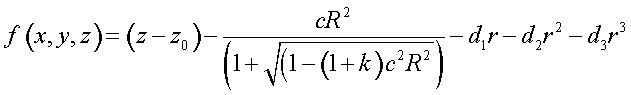
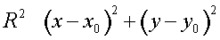
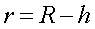
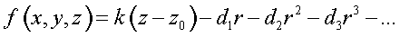

Creates a surface specified by a user-defined function.
Syntax
USERFUNC [ EXPLICIT ] x y z [ fcn ] [ c c' c" ... ]
| Option | Description |
|---|
| x y z | global coordinates of reference point |
| EXPLICIT | explicit function |
| fcn | user-defined function ($FCN) |
| c c' c" ... | coefficients of function |
Reference Point
As specified
Surface Normal
As specified
Autolimiting
No, requires LOCAL or LIMITS modifiers.
Remarks
- A user-programmable, implicit (f(x,y,z)=0)
or EXPLICIT (f(x,y)-z=0) function with reference point x,y,z and
double-precision coefficients.
- Its value and gradient at any point (and
wavelength) can be coded by the user in the $FCN named fcn or the Fortran function USERFUNC.
- If the function is continuous in both value
and gradient everywhere in space, then there are no restrictions on the use of this
function in the program, except possibly the application of non-orthogonal
transformations to it; for example,. SKEW or non-isotropic
SCALE.
- If the fcn is specified,
then the current WAVELENGTH (or the associated ray/beam’s
wavelength) is passed in the "_0" register, the local x y z
coordinates are passed in the _1 _2 _3 registers, and up to 63 coefficients
c c’ ... in _4 _5 ... _66.
- If 4 or more values are returned, then the
last 4 entries of the executed function must be the functional value and its
gradient vector. If only one value is returned, then it is the functional value and
the gradient is calculated numerically using finite-differences. For example, a
sphere of radius 10 centered about the reference point is done as follows:
$FCN SPH _1^2+_2^2+_3^2-_4^2 2*_1 2*_2 2*_3
:
SURFACE; USERFUNC .5 0 -1 SPH 10
- Otherwise, the default USERFUNC is an aspheric conicoid with vertex at x,y,z
and normal direction c,c’,c". The fourth and fifth coefficients
are the vertex curvature (inverse radius) and the conic constant (0=sphere,
-1=parabola), respectively. The remaining coefficients are for a straight polynomial
in an offset radial distance including odd terms; that is,. the seventh coefficient
is the linear term, the eighth is the quadratic, and so on. For example,
USERFUNC x y z 0 0 1 c k h d d’ d" ...



An exception has been implemented when the curvature c
is zero; that is,

USERFUNC Examples